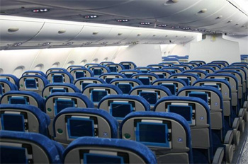

 A Pelican Airlines é a companhia aérea portuguesa líder de mercado, que celebrou o seu 60º aniversário no dia 14 de Março de 2005, data em que passou também a integrar a Star Alliance, a maior aliança global de companhias aéreas a nível mundial.
A Pelican Airlines é a companhia aérea portuguesa líder de mercado, que celebrou o seu 60º aniversário no dia 14 de Março de 2005, data em que passou também a integrar a Star Alliance, a maior aliança global de companhias aéreas a nível mundial.
Com Hub em Lisboa – plataforma privilegiada de acesso à Europa – na encruzilhada com outros Continentes, a Companhia voa actualmente para 43 destinos, dispersos por 25 países em África, América do Norte e do Sul, região em que a Pelican Airlines se destaca como a transportadora europeia líder de operação para o Brasil.
Prosseguindo uma orientação estratégica cuja prioridade é a satisfação das expectativas dos Clientes, a Pelican Airlines procura continuamente proporcionar-lhes as melhores e mais fáceis soluções para as suas viagens, agregando cada vez mais valor ao produto que lhes oferece.
Com esse objectivo, a Empresa estabelece também as melhores parcerias, em terra e no ar, disponibilizando assim um número alargado de destinos servidos em code-share com companhias suas congéneres, além de um diversificado conjunto de vantagens e benefícios associados.
A Pelican Airlines pretende tornar-se, cada vez mais, numa companhia aérea de referência na cena internacional, aproveitando todas as oportunidades de negócio dos mercados em que compete e diferenciando-se pela sua eficiência operacional e qualidade de serviços.
A Empresa visa constituir, em cada momento, a melhor opção para as viagens dos seus Clientes, assim como assegurar ao seu Accionista os mais adequados níveis de rentabilidade e aos seus trabalhadores as melhores condições de desenvolvimento profissional.